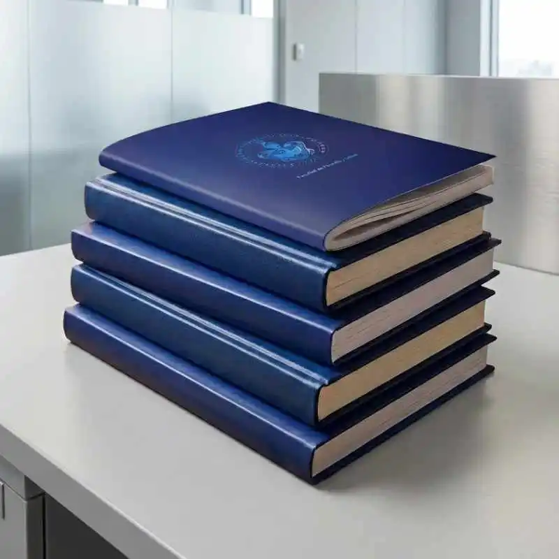
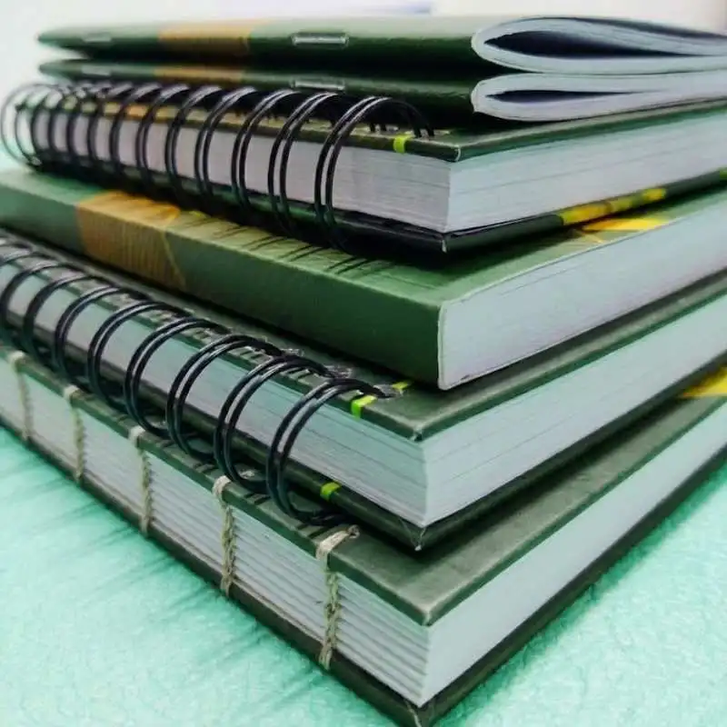

Impresión digital profesional, empastados y encuadernación con acabados de alta calidad. Atendemos empresas, estudiantes e instituciones en Puebla con entregas rápidas y atención personalizada.
En ALdigital somos una imprenta en Puebla especializada en impresión digital de alta calidad para negocios, emprendedores y público en general. Ofrecemos soluciones completas en papelería corporativa y material impreso, cuidando cada detalle desde el archivo hasta el acabado final.
Trabajamos con equipos profesionales que garantizan colores precisos, excelente definición y tiempos de entrega rápidos. Nuestro objetivo es que tu material impreso proyecte una imagen profesional y genere impacto visual.
Realizamos empastados profesionales en Puebla para distintos tipos de documentos: tesis, libros, informes, manuales, bitácoras y material institucional. Contamos con opciones de pasta dura, pasta suave y acabados especiales como grabado en oro o plata.
Nos adaptamos a distintos volúmenes y tiempos de entrega, manteniendo siempre un estándar alto de presentación y durabilidad.

Nuestro taller de encuadernación en Puebla ofrece múltiples sistemas según el tipo de proyecto: espiral metálico o plástico, wire-o, encuadernado térmico, rústica fresada, tapa dura y grapado tipo revista.
Esto nos permite atender desde trabajos académicos hasta proyectos corporativos y editoriales, asegurando resistencia, funcionalidad y una presentación profesional.

Contamos con más de 100 reseñas reales en Google Maps, donde estudiantes, empresas e instituciones comparten su experiencia con nuestros servicios de impresión, empastado y encuadernación en Puebla.
Estas opiniones reflejan nuestro compromiso con la calidad, la rapidez de entrega y la atención personalizada que ofrecemos diariamente en nuestro taller en Jardines de San Manuel.
La confianza de nuestros clientes es nuestro mayor respaldo. Si ya trabajaste con nosotros, tu reseña también nos ayuda a seguir mejorando.
Comprometidos con tus tiempos en la ciudad de Puebla.
Impresión y encuadernación en un solo lugar.
Acabados profesionales que resaltan tu trabajo.
Equipos de última generación para resultados precisos.
Asesoría experta para cada uno de tus proyectos.
En el corazón de la zona, fácil acceso.
Envíanos tu archivo o idea y recibe una cotización clara y rápida.
Preparamos tu material con equipos profesionales y control de calidad.
Verificamos acabados, impresión y encuadernado.
Recibe tu pedido en tiempo y forma en Puebla.
Imprenta y taller de encuadernación
Blvd. 18 Sur 6130, Jardines de San Manuel, 72570 Heroica Puebla de Zaragoza, Pue.
222 277 1994
Lunes a Viernes: 9:00 a.m. – 7:30 p.m.
Sábado: 9:00 a.m. – 2:30 p.m.
Nos ubicamos en Jardines de San Manuel. ¿Necesitas una cotización rápida? Escríbenos por WhatsApp y recibe atención inmediata.
Cotizar por WhatsAppEn ALdigital ofrecemos impresión digital, empastados y encuadernación profesional en Puebla con atención personalizada.
Sí, contamos con opciones de producción rápida dependiendo del tipo de trabajo.
No. También empastamos libros, informes, manuales, bitácoras y documentos institucionales.
Sí, trabajamos con empresas, instituciones educativas y público en general.
Espiral, wire-o, térmico, tapa dura, rústica fresada y grapado.
Sí, ofrecemos servicio integral de impresión y acabado.
Contáctanos y recibe asesoría personalizada para tu proyecto. Te ayudamos a elegir el mejor acabado y formato según tus necesidades.
Cotizar ahora